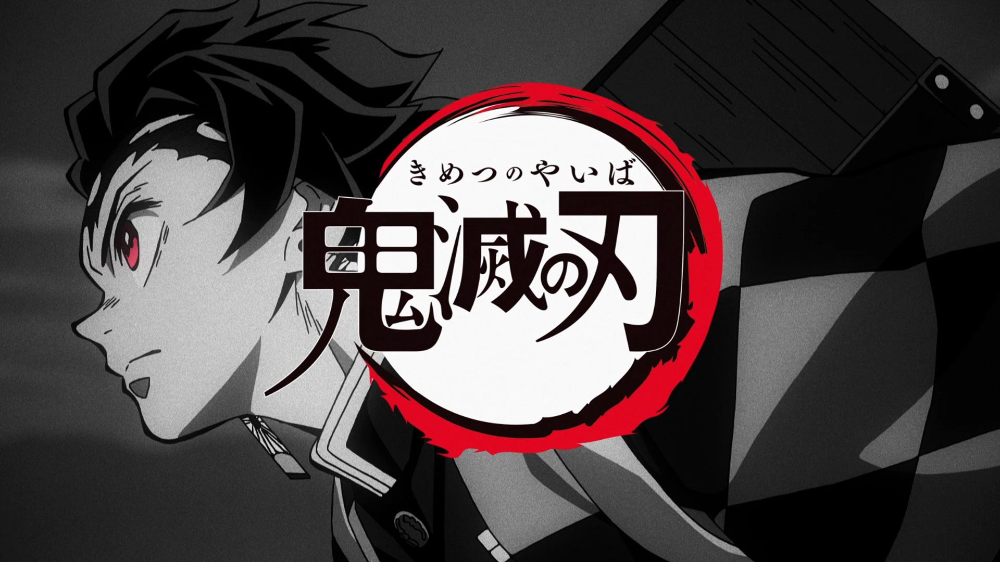
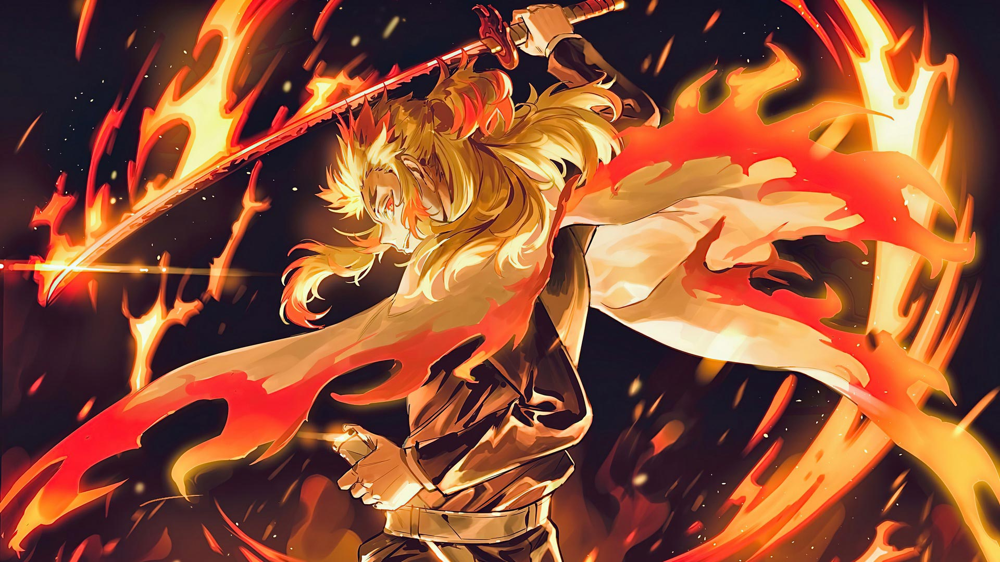

Kimetsu no Yaiba

Kimetsu no Yaiba (bahasa Jepang: 鬼滅の刃, terj. har. "Korps Pembasmi Iblis"[4]), yang diterbitkan di Indonesia dengan judul Demon Slayer: Kimetsu no Yaiba, adalah sebuah seri manga Jepang yang ditulis dan diilustrasikan oleh
Koyoharu Gotōge. Ceritanya mengisahkan tentang Tanjiro Kamado, seorang anak laki-laki yang menjadi pembasmi iblis setelah keluarganya dibantai oleh iblis dan adik perempuannya yang bernama Nezuko diubah menjadi iblis. Manga ini
dimuat berseri dalam majalah Weekly Shōnen Jump terbitan Shueisha sejak bulan Februari 2016 hingga Mei 2020, dan telah dibundel menjadi dua puluh satu volume tankōbon hingga bulan Juli 2020. Manga ini diterbitkan dalam bahasa
Inggris oleh Viz Media, sementara Shueisha merilisnya dalam bahasa Inggris dan Spanyol secara serentak dengan perilisannya di Jepang melalui platform Manga Plus milik mereka.
Manga ini diadaptasi menjadi sebuah seri anime yang diproduksi oleh Ufotable dan ditayangkan sejak bulan April hingga September 2019. Sekuel berupa film layar lebar diumumkan ketika episode terakhir disiarkan dan dijadwalkan
untuk dirilis pada bulan Oktober 2020. Per bulan Mei 2020, manga ini telah terjual sebanyak lebih dari 80 juta cetak dalam peredaran—termasuk versi digitalnya, dan membuatnya menjadi salah satu seri manga terlaris. Sementara
itu, seri anime-nya telah menerima banyak penghargaan dan dianggap sebagai salah satu anime terbaik pada dekade 2010–an.
Alur Cerita
Berlatar di Jepang pada zaman Taisho, Tanjiro Kamado adalah seorang bocah lelaki baik hati dan cerdas yang tinggal bersama keluarganya dan mencari uang dengan cara menjual arang. Semuanya berubah ketika keluarganya diserang dan
dibantai oleh iblis (oni).
Tanjiro dan saudarinya Nezuko adalah satu-satunya yang selamat dari insiden tersebut, meskipun Nezuko sekarang telah berubah menjadi iblis—tetapi secara mengejutkan dia masih menunjukkan tanda-tanda emosi dan pemikiran layaknya
seorang manusia. Tanjiro kemudian menjadi pembasmi iblis untuk mengembalikan Nezuko menjadi manusia lagi, dan untuk mencegah tragedi yang terjadi pada dia dan adiknya terulang pada orang lain.
Produksi
Pada tahun 2013, Koyoharu Gotōge debut melalui ajang Jump Treasure Newcomer Manga Awards ke-70 dengan karyanya yang berjudul Ka Gari Gari (過狩り狩り).[10][11] Karya Gotōge yang berikutnya merupakan tiga seri one-shot; Monju
Shirō Kyōdai (文殊史郎兄弟) yang diterbitkan dalam edisi ke-2 dari majalah Jump Next! pada tahun 2014, Rokkotsu-san (肋骨さん) dalam edisi ke-39 dari Weekly Shōnen Jump pada tahun 2014, dan Haeniwa no Zigzag (蠅庭のジグザグ)
dalam edisi ke-21 dari Weekly Shōnen Jump pada tahun 2015.[12] Setelah Haeniwa no Zigzag gagal dijadikan seri, Tatsuhiko Katayama yang merupakan editor pertama Gotōge, menyarankannya untuk membuat seri baru dengan "tema yang
mudah dipahami".[13] Karya Gotōge bertajuk Ka Gari Gari kemudian menjadi dasar untuk storyboard pertama yang berjudul Kisatsu no Nagare (鬼殺の流れ), karena cerita tersebut memiliki konsep seperti pedang dan iblis yang
familiar dengan khalayak Jepang.[13] Storyboard tersebut tidak jadi dimuat berseri karena memiliki nuansa yang serius, kurangnya elemen berupa comic relief dan ceritanya yang terasa gelap. Katayama meminta kepada Gotōge apakah
dia bisa membuat seorang karakter yang cerah dan normal di dalam dunia yang telah dibuatnya.[13] Dalam rencana awal, judulnya adalah Kisatsu no Yaiba (鬼殺の刃), tetapi mereka merasa aksara "satsu" (殺, terj. har. "bunuh")
memiliki makna yang terlalu kuat. Kata "kimetsu" (鬼滅) dipandang sebagai kata yang mudah dipahami, dan meskipun kata tersebut tidak memiliki makna yang berarti, Gotōge berpikir akan menjadi suatu hal yang menarik untuk bisa
menyingkat judul seri barunya dengan cara seperti, sedangkan kata "yaiba" (刃, terj. har. "pedang") menyiratkan pedang khas Jepang.
Anime
Adaptasi anime untuk manga ini yang diproduksi oleh studio Ufotable diumumkan dalam majalah Weekly Shōnen Jump pada tanggal 4 Juni 2018.[32] Seri anime Demon Slayer: Kimetsu no Yaiba ditayangkan perdana pada tanggal 6 April
2019 di Tokyo MX, GTV, GYT, BS11, dan saluran lainnya.[33][34] Haruo Sotozaki menyutradarai anime tersebut menggunakan skrip dari staf Ufotable. Yuki Kajiura dan Go Shiina berperan sebagai penggubah musiknya, sementara Akira
Matsushima mendesain karakternya. Hikaru Kondo berperan sebagai produser.[35] LiSA membawakan lagu tema pembuka yang berjudul "Gurenge" (紅蓮華),[36] sedangkan lagu tema penutupnya berjudul "From the Edge" yang dibawakan oleh
FictionJunction bersama LiSA.[37] Seri tersebut ditayangkan sebanyak 26 episode.
Manga

Ditulis dan diilustrasikan oleh Koyoharu Gotōge, Demon Slayer: Kimetsu no Yaiba mulai dimuat berseri dalam edisi ke-11 dari majalah Weekly Shōnen Jump yang diterbitkan oleh Shueisha pada tanggal 15 Februari 2016.[10] Dalam
edisi ke-23 dari majalah Weekly Shōnen Jump yang diterbitkan pada tanggal 11 Mei 2020, diumumkan bahwa manga ini akan mencapai klimaksnya.[14] Manga Demon Slayer: Kimetsu no Yaiba berakhir pada edisi ke-24 dari majalah Weekly
Shōnen Jump yang diterbitkan pada tanggal 18 Mei 2020.[15][16] Volume pertamanya diterbitkan pada tanggal 3 Juni 2016.[17] Pada bulan April 2020, diumumkan bahwa perilisan volume 20 dimundurkan dua minggu akibat pandemi
COVID-19.[18] Hingga bulan Mei 2020, dua puluh volume telah diterbitkan.